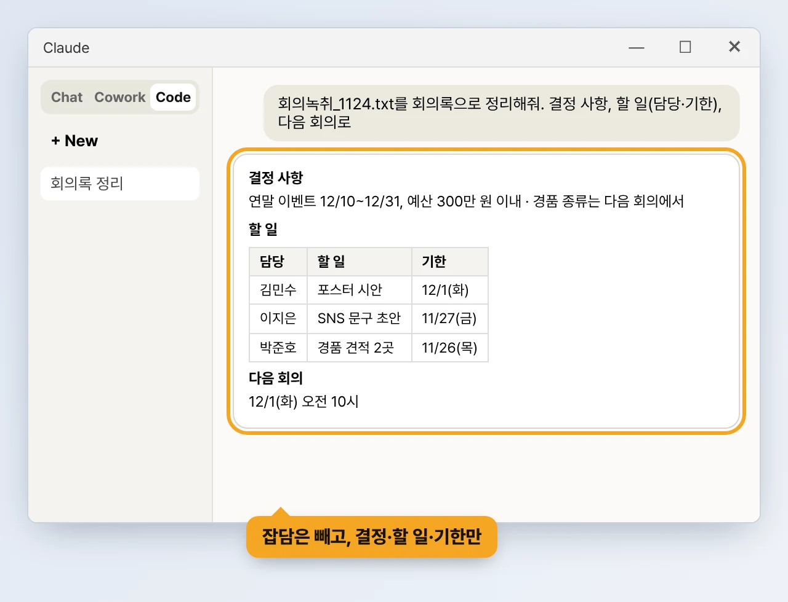
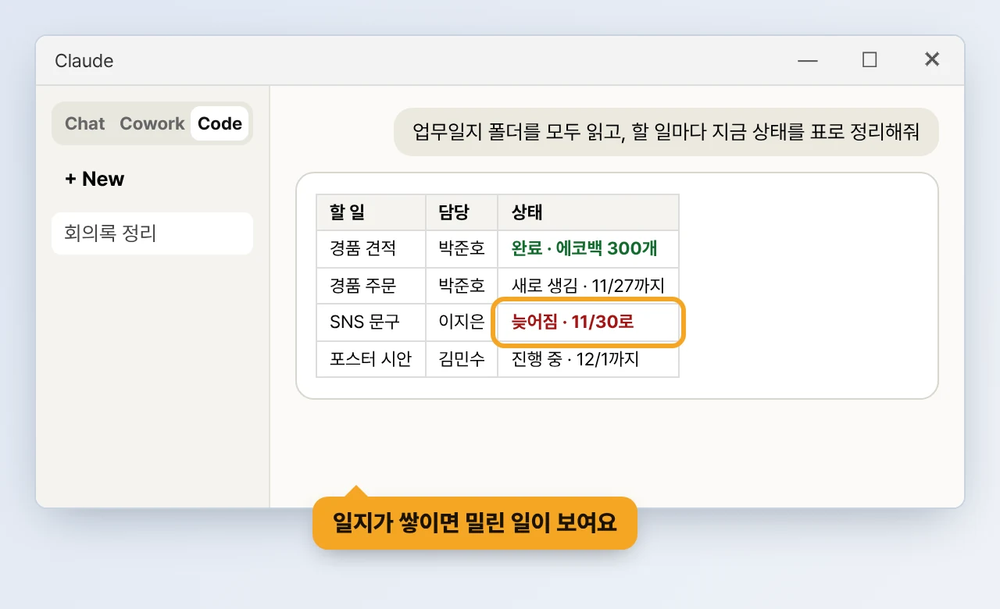
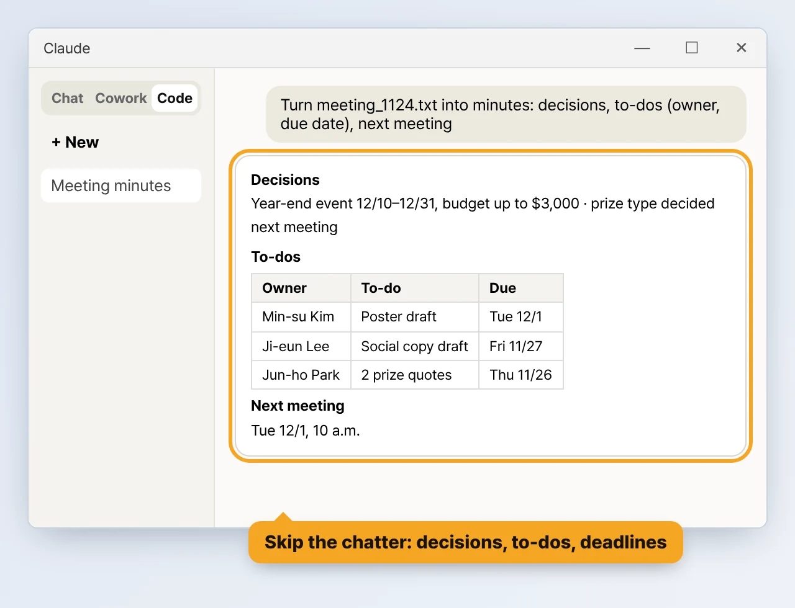
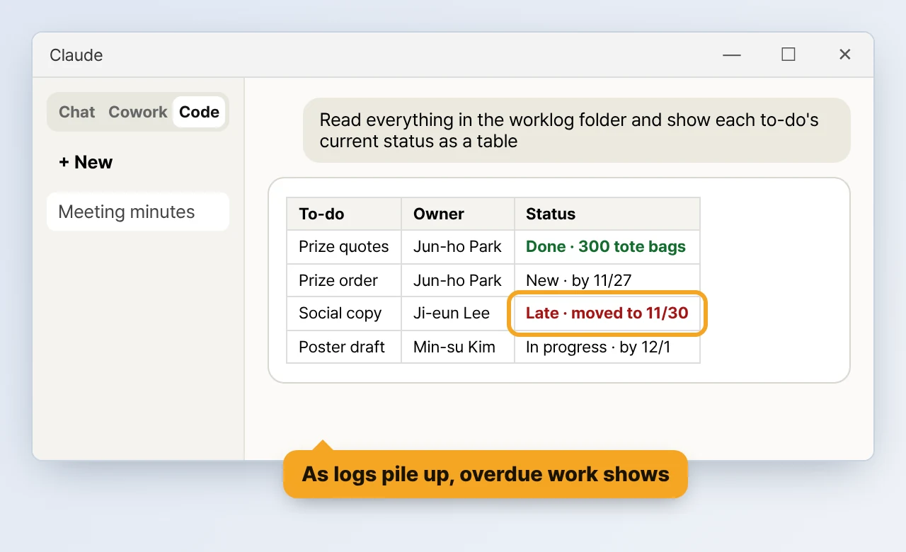

👆 이 내용은 버튼 따라 하는 실습으로도 있어요. 처음이라면 실습으로 직접 해 보고, 이 글은 복습할 때 보세요. 실습 시작하기 →
※ 글 속 그림은 따라 하기 쉽도록 그린 예시입니다. 실제 앱 화면과 모양·글자가 조금 다를 수 있어요.
오늘 새로 배우는 것
회의를 녹음해 두면 나중에 들을 시간이 없죠. 오늘은 녹음을 회의록 → 업무일지 → 진행 상황표로 바꿔 봐요.
1. 녹음을 글로 바꾸는 법
| 휴대폰·앱 | 방법 |
|---|---|
| 갤럭시 | 기본 음성 녹음 앱에서 녹음 → 녹음 파일을 열고 텍스트 변환(지원 기종) |
| 아이폰 | 음성 메모 앱에서 녹음 → 녹음을 열고 텍스트(전사) 보기 (최신 iOS) |
| 앱 | 클로바노트 같은 녹음·받아쓰기 앱 → 텍스트로 내보내기 |
만든 글은 카톡 '나에게 보내기'나 이메일로 컴퓨터에 옮겨 .txt로 저장하세요. 기종과 버전에 따라 메뉴 이름이 조금 달라요.
2. 예시 녹취록 받기
마케팅팀의 11월 24일 회의와 11월 26일 중간 점검 녹취록이에요. 둘 다 연습 폴더로 옮기세요.
⬇ 회의녹취_1124.txt ⬇ 회의녹취_1126.txt
3. 녹취록을 회의록으로
+ New로 새 대화를 열고(Local · 연습 · Manual) 보내세요.
회의녹취_1124.txt를 회의록으로 정리해줘. 결정 사항, 할 일(담당·기한), 다음 회의로
녹취 앱은 이름 대신 '참석자 1, 2…'로 적어요. 녹취록 끝에 '참석자 1 = 최유진 팀장'처럼 적어 두면 이름으로 정리해 줘요. 날짜는 원문과 맞춰 보세요.
4. 오늘 업무일지 쓰기
나는 박준호야. 업무일지 폴더를 만들고, 오늘(11월 24일) 업무일지를 2026-11-24.txt로 써줘. 형식은 '오늘 한 일 / 결정된 것 / 내 할 일(기한) / 다음 일정'폴더 만들기·파일 만들기 허락 카드를 읽고 허용하세요. 파일 이름을 날짜로 하면 순서대로 쌓여요.
5. 다음 날 일지도 쌓기
회의녹취_1126.txt도 읽고, 같은 형식으로 2026-11-26.txt 업무일지를 써줘6. 일지를 모아 진행 상황 보기
업무일지 폴더를 모두 읽고, 할 일마다 지금 상태를 표로 정리해줘
견적은 완료, SNS 문구는 11/30로 늦어짐처럼 밀린 일이 한눈에 보여요.
매일·매주 습관으로
| 언제 | 이렇게 |
|---|---|
| 회의 끝나면 | 녹취록을 폴더에 넣고 "회의록으로 정리해줘" |
| 퇴근 전 | "오늘 업무일지를 오늘 날짜로 써줘" |
| 금요일 | "이번 주 업무일지로 주간 보고 초안 써줘" (실무 3편) |
형식을 파일로 저장해 두면 매번 설명하지 않아도 돼요: "지금 쓴 업무일지 형식을 양식.txt로 저장해줘" → 다음부터 "양식.txt대로 써줘".
회의 녹취에는 민감한 이야기가 담길 수 있어요. 회사의 AI 사용 규칙을 먼저 확인하세요.
오늘 배운 것
- Claude는 녹음을 직접 못 듣는다. 녹음 앱의 글 변환으로 녹취록부터.
- 회의록은 결정·할 일(담당·기한)·다음 회의만. 날짜는 원문과 맞춰 본다.
- 업무일지는 같은 형식, 날짜 이름으로 쌓으면 진행 상황이 보인다.
※ The pictures in this guide are illustrations to make it easy to follow. The real app may look a little different or use different words.
What you'll learn today
Recording meetings is easy; finding time to listen back isn't. Today you'll turn recordings into minutes → a work log → a progress table.
1. How to turn a recording into text
| Phone / app | How |
|---|---|
| Samsung Galaxy | Record in the built-in Voice Recorder → open the recording → Transcribe (supported models) |
| iPhone | Record in Voice Memos → open it → view the transcript (recent iOS) |
| Apps | Recording and transcription apps → export as text |
Send the text to your computer (email or a messaging app) and save it as a .txt file. Menu names vary a little by phone and version.
2. Get the sample transcripts
Transcripts of the marketing team's November 24 meeting and November 26 check-in. Move both into the Practice folder.
⬇ meeting_1124.txt ⬇ meeting_1126.txt
3. Turn the transcript into minutes
Open a new chat with + New (Local · Practice · Manual) and send:
Turn meeting_1124.txt into minutes: decisions, to-dos (owner, due date), next meeting
Transcription apps write 'Speaker 1, 2…' instead of names. If the end of the transcript says who's who ('Speaker 1 = Yu-jin Choi'), it'll use names. Check dates against the original.
4. Write today's work log
I'm Jun-ho Park. Make a worklog folder and write today's (November 24) work log as 2026-11-24.txt. Format: 'Done today / Decided / My to-dos (due) / Upcoming'Read and allow the make-folder and create-file cards. Naming files by date keeps them in order.
5. Add the next day's log
Also read meeting_1126.txt and write the 2026-11-26.txt work log in the same format6. Gather the logs to see progress
Read everything in the worklog folder and show each to-do's current status as a table
You can see overdue work at a glance, like quotes done and the social copy late (moved to 11/30).
Make it a daily and weekly habit
| When | Say |
|---|---|
| After a meeting | Put the transcript in the folder: "Turn this into minutes" |
| Before leaving | "Write today's work log under today's date" |
| Friday | "Draft a weekly report from this week's logs" (Work guide 3) |
Save the format to a file so you don't have to explain it each time: "Save this work-log format as template.txt" → next time "Write it following template.txt".
Meeting transcripts can contain sensitive talk. Check your company's AI usage rules first.
What you learned today
- Claude can't listen to audio. Start with a transcript from your recorder app's transcribe feature.
- Minutes: just decisions, to-dos (owner, due), next meeting. Check dates against the original.
- Keep work logs in the same format, named by date, and progress shows itself.